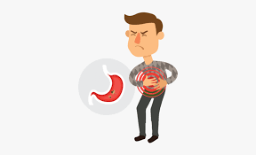

Medicine and pharmacy-DECEMBER 3,2022
DO WEIGHT LOSS AFFECT YOUR KIDNEY
Are you also suffering from being overweight? Do you also wish to lose weight? Does weight loss diet damage kidneys? If you have these questions, you are in the right place. We always feel that eating, drinking, and gaining a little weight is not something to worry about! Well, everything starts with a bad lifestyle
READ MORE

Medicine and pharmacy-MAY 14,2022
SIGNS THAT YOU MIGHT BE LIVING WITH KIDNEY STONES
Kidney stones are as small as a grain of sand, but they pack a powerful punch. You feel completely fine one minute and the next thing you know, you’re doubled over in agony, desperately trying to find the strength to get to the ER. The ureteropelvic junction is a kind of funnel where urine exits
READ MORE

Medicine and pharmacy-June 12,2022
MANAGING CHRONIC HEMORRHOIDS
One of the most common illnesses across the globe is ‘Hemorrhoids’. Also known as ‘Piles’ across general people, similar to that of ‘varicose veins’. Hemorrhoids are an illness of the rectum-anus area. It is a condition where the internal veins of the rectum get swollen and the skin surrounding the anus. In this condition, one
READ MORE